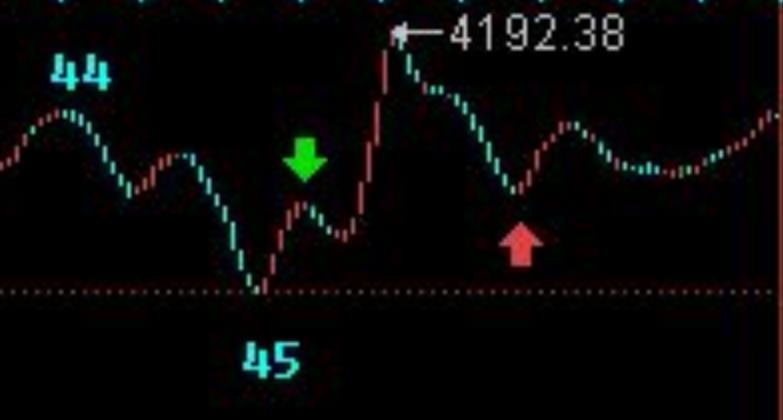
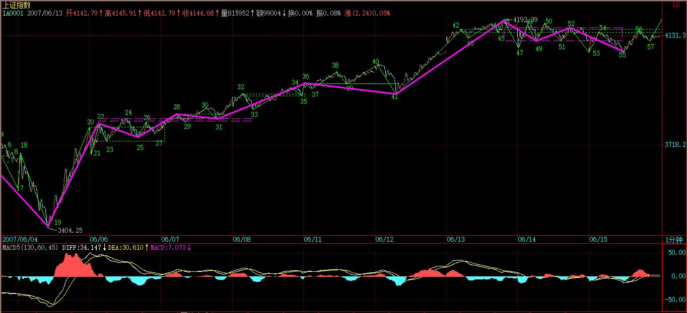
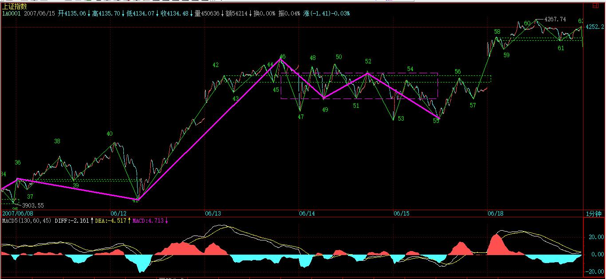

(2007-06-14 08:23:43)
出差，必须用三张图才能把落下的走势补上。
对于初学分析的人，最难搞的就是分清楚线段，所以，在每张图上，都继续用数字标记每一段线段，从中不难学会究竟线段是如何分的。
【韶山映山红】若禅精舍（陈秋明）：
此线段非彼线段，这里的线段划分，更多依据的是走势必完美的原理，与后文中精确定义的线段是不同的，阅读者注意。但二者经常会有相似，按两个标准划分的线段会出现同样的划分，这很正常，但并不意味着二者是同一回事。
】
有人可能要问，为什么有些线段延续上百点甚至更多，而有些很短。这没什么奇怪的，是否线段，关键看走出来的形态，【韶山映山红】线段本身是纯形态学的。线段划分规则包含动力学考量。】如果任何低点比前一个高点都高，那么即使这情况无限延续下去，也依然只是一线段，这和幅度没关系。【韶山映山红】线段类趋势的形态。】
【韶山映山红】若禅精舍（陈秋明）：
只要方向性的能量仍然在释放中，那么该线段就始终在延续，只有被同级别的反向线段打断这种能量的释放后，才能终结。
】
还有，前后两线段间，不可能是同向的，同是向上或向下不可能构成两个前后相邻的线段。【韶山映山红】划分不出反向的线段，就还是合并做同一个线段。实例：下图104a-104b不成段，是因为没有向上破坏104-104a的前低点，就像103-104的争议一样。然后，这里104a-104b和104b-105两段走势属于同一个向下段，看上去有点不习惯。】
而且，由于线段都至少呈现上下上或下上下，所以线段不存在一条直线走平的可能，【韶山映山红】线段的过程不存在一条直线走平的可能，线段的两个端点是否可以在一个水平线上呢？以后研究。】由此也知道，为什么一字涨停，无论如何延续，还是低于线段的级别，是最小级别的。【韶山映山红】不能形成线段的次级别。】
下面，先把三张图列出来，三者之间是连续的，根据上面的标记可以明白。由于K线太多，不能放到一张图上，否则看不清楚。
【韶山映山红】博客原图20070606.jpg（2007-06-14 08:21）】
【韶山映山红】博客原图20070607.jpg（2007-06-14 08:21）】
【韶山映山红】博客原图20070613.jpg（2007-06-14 08:21）】
【韶山映山红】20这里微弱的跳空没有单独成段，也没有单独成笔，被包含在上升笔里面了。21的位置是开盘下跌、回拉、再下跌的低点。缠论进化到59课的时候，线段还是三折就行。按照后期的笔线段规则，20-21这里不成段。】

图一中，20-23构成的1分钟中枢产生延续，29是这中枢的第三类买点。
【韶山映山红】19-22有abc盘整背驰，22-23回踩形成中枢20-23，线段级别的中阴中枢，29是中阴中枢的第三类买点，至此，向上的线段类走势升级为1分钟中枢级别走势。】
【韶山映山红】这个29的三买和后面几个三买的意义不一样，缠师在图上用红箭头做了一个标记，可能就是这个原因。】
图二中，33是28-31，37是32-35的1分钟中枢第三类买点。
【韶山映山红】α+β问33-34这里问什么没有像8-9那样成段？】
【韶山映山红】我觉得是因为33一开始就有中枢，这里是中枢级别的中枢类走势。而7-8是低一个级别的线段类走势，8-9高一个级别，所以单独成段了。如果7-8那一段的第二个小中枢成立，8-9也不会单独成段，就会和这里一样了。原文说过这个问题。】
图三中，由于红箭头处比绿箭头高，所以不能确定该线段已经完成，还要看后面走势，【韶山映山红】这里看不出缠师是否已经标记46，按照当时的线段规则，45-46应该已经成段。红箭头处没有跌破前高的绿箭头处，也就是说，46开始的下跌没有破坏前线段，所以现在的45-46线段还不能确定结束。45开始的向上段，上下上没有线段类盘整背驰，没有发生可以确认转折的小转大，所以“还要看后面走势”。】

由此可以知道如何去把握线段的结束：一般来说，线段的结束与大级别的走势段是一样的，在趋势中用背驰来确认，其他情况用盘整背驰来确认，如果有突发性事件，就要看第二类的买卖点，其道理是一样的，只是所用到的级别特别小而已。【韶山映山红】“如果有突发性事件”，没有背驰或盘整背驰，就会是小转大的情况，没有第一类买卖点显示走势的结束，“就要看第二类的买卖点”，如果出现第二类买卖点，就可以假设反向线段成立，然后看是否破坏前线段。】
【韶山映山红】缠论进化到59课的时候，线段还不是后来的初始化函数，还是次级别走势类型的简化，属于递归函数，所以“线段的结束与大级别的走势段是一样的”，用背驰或盘整背驰的方法来确认，“只是所用到的级别特别小而已”。那么，是什么原因导致了后来的线段变成初始化函数呢？可以做个专题，以后研究。★★★】
而对于图三，后面的走势，与42-45的1分钟中枢相关，无非就是中枢震荡直到出现其第三类买卖点。

【韶山映山红】若禅精舍（陈秋明）：
此处，线段的结束与大级别的走势段是一样的，在趋势中用背驰来确认，其他情况（两种盘整）用盘整背驰来确认。这里的分段标准，与走势类型分析的标准，是相同的，也就是可以让最小级别走势类型的划分与高级别的划分标准一致，而后面涉及的标准线段，则涉及到两个不同的划分标准。
其实这里还漏掉了一个辅助标准，像21-22这一段，就没有盘整顶背驰，那么根据的就是高低点，以及22-23的线段确认，即因为22-23是个线段，所以21-22也是，当然，文中也说了，突发性事件要看第二类买卖点，22后面的次高点属于第二卖点，这也可以成立。
】
注意，在前面一课的7-8-9中，由于8下来的低点3994.57与7中最后一个高点3994.21极为相近，如果点数只用到个位的精度，两者就完全一样的，所以在这种情况下可以看成是有重合的，因此可以分成三个线段。当然，如果精度要求到小数点后两位，那么这7-8-9其实可以看成是一个线段。【韶山映山红】这里说的分成三个线段，牵涉到当时的线段划分规则。7开始是线段类上涨趋势，8-9是三段盘整，要独立成一段，就要破坏前面的线段类上涨趋势，所以至少要求“8下来的低点”和“7中最后一个高点”重合。“如果精度要求到小数点后两位”，9'就高于8'，假设的8-9线段区间就没有跌破前高，就没有破坏前线段，反推8-9线段不成立。换句话说，即使是线段类趋势上涨的背驰，形成了独立的盘整走势，也还是要满足破坏前线段的要求，才算成立。否则，即使有中枢盘整，也还是和线段类趋势上涨合并为同一个线段。 由此可以有一个推论：两个中枢的震荡区间有重叠，但是没有完成扩张升级的时候，选择第二个中枢作为独立的线段类走势，因为是她的震荡区间跌破前高，满足线段要求。★可以做个专题，以后研究。】
一般来说，如果这两者如此相近，而且8中也带着明显的下上下，所以还是看成三线段比较好。【韶山映山红】言下之意，缠师还是倾向于多划分线段。为什么呢？★可以做个专题，以后研究。】
【韶山映山红】既然说“这两者如此相近”，也就是说，这一句所站的立场是两者不重叠。这里7的最后一段震荡是否算是一个中枢，还不确定。前面原文说过，震荡偏小，不算，但是也可以算，只要统一标准就好。那么，如果算中枢，这里就是两个中枢的趋势，因为两个中枢太接近就把第二个中枢算单独一段？如果不算中枢，7还是线段类趋势，很接近前高的中枢也看作是线段类趋势背驰之后的更大级别盘整，“还是看成三线段比较好”，★可以做个专题，以后研究。】
当然，如何看，关系到你事先确认的精度，关键是统一去看，至于按哪种精度，都没有任何实质影响。【韶山映山红】这里8-9是否成段，直接影响到5分钟中枢的当下划分，怎么能说“没有任何实质影响”呢？即使这里不构成三段盘整走势，也依然以次级别身份参与5分钟中枢的构建？如何理解模糊的正确？★可以做个专题，以后研究。】
【韶山映山红】若禅精舍（陈秋明）：
反复强调过，精度，相当于小数点后的取值范围，取8位还是3位，实质上不会有影响，特别是经过递归之后，随着递归的级别次数越多，影响越趋向于零。
】
有人可能又要问，怎么总是说1分钟的图？
其实，看什么图并不重要，从1分钟图看起，只不过意味着这分析的基础有一个1分钟图的精度前提，在这个前提下，当然要看1分钟的图，而这不影响对大级别的分析。
例如，1-19，就构成一个5分钟的走势类型，而这走势，最终确认并没有形成两个5分钟的中枢，所以只能算是一个盘整。【韶山映山红】“最终确认”说明这个盘整走势类型是追认的，不是当下就判定的。5分钟的离开段10-19没有出现中枢的第三类买卖点，也就没有a+A+b盘整底背驰，19的小转大逐步走出了一个向上的5分钟走势类型。】那么，是哪个点“最终确认”的呢？】

【韶山映山红】这里怎么判断0-19是一个完成的走势类型？★★★ 5分钟中枢1-10的进入段是0-1，离开段10-15的时候已经不可能有a+A+b的中枢盘整背驰了，后面的走势只能是跌到底部看背驰情况。对1分钟中枢10-14来说，离开段14-15对进入段7-10也不可能有a+A+b的中枢盘整背驰了，16三卖后，就看是什么时候形成中枢成为下跌趋势了。16-17的线段类盘整背驰没有回前低15，没有形成中枢。18-19继续线段类盘整背驰。最终反弹19-20突破15，应该还是小转大的力量。】

【韶山映山红】29是中阴中枢的三买，最终确认19开始的1分钟向上走势成立，1分钟转折。 30涨破5分钟中枢的DD点7，确认5分钟下跌趋势暂时不会有了。31确认19开始的新走势形成5分钟中枢，这个中枢虽然在前一个5分钟中枢的下方，但同时又在明显的反弹上涨过程中。随后41有了第三类买点，确认新走势的5分钟中枢完成，由此可以确认19的5分钟级别转折，确认1-19构成一个5分钟的盘整。这个“最终确认”应该是41的位置。19-41都是中阴状态，但是由于0-19没有5分钟和1分钟级别的背驰，无法当下确认中阴阶段的开始，后面的走势又是小级别扩展升级走出来的，这里按照级别做机械操作不是很爽。如果19没有介入，29的1分钟中阴中枢的三买、31的5分钟新走势中枢震荡的类二买是相应操作级别的介入位置。】
【韶山映山红】研究点1：10-19是1分钟盘整离开，1分钟中枢在5分钟中枢里，实际离开中枢的部分是次次级别的线段类下跌。这种类型的走势有什么规则？以后研究。★★★】
【韶山映山红】研究点2：对1分钟中枢10-14而言，进入段7-10和离开段14-19都是线段级的，进入段和离开段反向。这一类型的走势有什么规则？以后研究。★★★】
【韶山映山红】研究点:3：盘整结束的标志是第三类买卖点。这里，5分钟盘整走势1-19的第三类买卖点要求是1分钟离开、1分钟返回不进中枢，这里的离开是研究点1里面说的1分钟盘整，返回从19开始演进到了45，三卖点应该是22，一个理论上的卖点，而且在一买19和二买25之间，这样就尴尬了。以后研究。★★★】

而从19开始到45，由于41低于32，所以这走势至少有一个5分钟的中枢，【韶山映山红】这里一连串的线段中枢都有三卖在前中枢震荡区间的问题，为什么单独说“41低于32”？而且41低于34就满足中枢扩张的需求了，为什么拿32说事？★因为41跌破了前中枢的中枢区间？这意味着什么？★换句话说，37低于34，使得32-35和36-39两个中枢的震荡区间有重合，如果41只是跌破34，而没有跌破32，就不算扩张成功吗？★以后研究。】
但这新的5分钟走势类型并没有最终完成。【韶山映山红】趋势肯定还不是，盘整也没有第三类买卖点，所以这时候的走势类型还没有完成。如果这里发生小转大，然后开始向下的5分钟走势，“这新的5分钟走势类型”就“最终完成”了。所以关键不是走势类型是否完成，关键是我们是否能当下判断完成。】
【韶山映山红】若禅精舍（陈秋明）：
1-19构成五分钟级别走势类型，图中可以看到15和18是没有任何重叠的，14-19属于abcde结构的一分钟级别走势类型。而这个五分钟级别走势类型，在划分上，可以有以上两种划分，在19那个当下，一般取值第二种，因为有个独立的五分钟级别中枢，后面的次级别走势在第三买卖点出现之前，都可以作为围绕该中枢的次级波动来分析，如此在当下的走势分析中，有个比较确定的基准点。
走势最终确认没有形成两个5分钟的中枢，这是从30位置突破7位置得来的，此时第二幅图中的五分钟中枢第三卖点的可能被确认消除，新的五分钟中枢可以转移到7-30区间来了。
】
对于19-45这个未完成的5分钟走势类型，可以进行仔细的研究。
由于29比24低，则22-31也构成一个5分钟中枢，【韶山映山红】这里开始把1分钟中枢的起点从20调整到了22，使得19-20-21-22构成1分钟盘整反弹。】而该中枢，就对应着另一种分解。【韶山映山红】从19开始到45可以组合出两个5分钟扩展的中枢，但是只组合一个，另一个不作为中枢对待，所以有两种分解。】
但无论如何分解，19-45至少是一个未完成5分钟走势类型的结论不变。【韶山映山红】完成就会发生5分钟转折，或者升级到30分钟走势，在此之前都是“一个未完成5分钟走势类型”。】
当然，站在这种分解下，41就是22-31这5分钟中枢的第三类买点。【韶山映山红】连续2个中枢都符合扩张升级的条件，前面两个扩张升级的时候，第3、4个就不扩张升级了，分别是离开和回踩。】
因此，如果41开始的上升最终形成5分钟中枢后不与22-31这5分钟中枢重叠，那么这19开始的走势类型就是5分钟的上涨趋势了。【韶山映山红】19开始的第一段反弹虽然没有直接返回前走势的中枢，但力度比较大，以至于新走势没有形成a+A+b盘整背驰，三买之后可以期待中枢上移。】
【韶山映山红】若禅精舍（陈秋明）：
41是22-31这个五分钟中枢的第三买点，这大概非常多的人并不清楚是怎么回事，原因很简单，因为39是34-37的第三买点，这是一个典型的，由盘整走势类型加盘整走势类型构成的第三买点。
】
由上面的分析，对短线的走势就有一个明确的结论，
只要关于42-45的1分钟中枢的震荡不出现第三类卖点，【韶山映山红】42-45的1分钟中枢不出现三卖的向下走势，就会是中枢延伸或出现三买的向上走势，都算向上的强势。】
或者即使出现，但其后扩张的走势不触及22-31这5分钟中枢震荡区间，那么大盘的震荡就是强势的，【韶山映山红】42-45的1分钟中枢出现三卖，然后扩张升级，但是没有向下扩张到前面的５分钟中枢22-31的震荡区间，也就是没有跌破GG，就没有更大级别的中枢扩张，依然是５分钟趋势，所以即使震荡也是强势的。】
即使最终形成30分钟以上级别中枢，也是至少是围绕42-45的1分钟中枢发展而来。【韶山映山红】42-45的1分钟中枢扩张成5分钟中枢，就和前面的5分钟中枢22-31构成了两个中枢的a+A+b+B+c的5分钟趋势，如果再进一步形成30分钟中枢，那也是B中枢的扩展升级，所以“至少是围绕42-45的1分钟中枢发展而来”，所以依然算是强势。】
否则，大盘将以22-31这5分钟中枢震荡区间为基础扩张出30分钟级别的中枢来，相应的走势就比较弱了。【韶山映山红】“否则”是指：42-45的1分钟中枢出现三卖、其后的扩张跌破22-31的5分钟中枢的震荡区间，导致5分钟中枢22-31扩张升级，也就是a+A+b+B的B没有完成，就已经和A扩张升级了，算比较弱。】
而具体的操作，可以按照中枢震荡的手法，根据自己操作的级别，选择相应的中枢级别进行操作。【韶山映山红】1分钟级别就做42-45中枢的震荡操作。5分钟级别的等1分钟abc盘整背驰的出现，然后做中枢震荡操作。】
【韶山映山红】若禅精舍（陈秋明）：
可能的五分钟上涨趋势，其第二个中枢将由42-45这个一分钟中枢发展而来，否则，趋势不能形成的情况下，就必然会回到第一个中枢区间，构成原22-31中枢的级别扩展。
】
附录：
【韶山映山红】2007-6-14 15:33】
今天的走势没什么可讲的，昨天都已经描述得很清楚了。技术、心理、政策等压力，都需要在这里震荡消化。由于今天没完全补上缺口，因此该位置依然是短线的关键，当然，上面说的42-45的1分钟中枢，已经延伸9段，成为一个5分钟中枢了，后面具体的分析，在上面的文章里已经写了，就不再多说。【韶山映山红】这时候还不知道52-53是否会成为向下的离开段，9段延伸是42-51，5分钟中枢的进入段还是次次级别的41-42。】
深圳受到13700点的吸引，短线，能否站稳该线对大盘走向有极大的引导作用。
注意，在中枢震荡中，安全的作法应该是先卖后买、形成节奏。其实这问题很简单，从低位上来的筹码，当发现单边走势结束，【韶山映山红】小级别走势类型，或者线段类盘整趋势。】进入较大级别震荡时候，其标志就是出现顶背驰或盘整背驰，【韶山映山红】小级别走势类型的顶背驰，或者线段类盘整背驰。】这就要求减磅，然后等震荡下来，出现底背驰或盘整背驰再回补，【韶山映山红】小级别走势类型的底背驰，或者线段类盘整背驰。】这样差价才出来，成本才下降。
如果是先买后卖，那唯一可能就是在单边的时候，【韶山映山红】而且是单边的起点。】你的仓位不高，所以才会不卖股票也有资金，这其实是节奏先错了的表现。【韶山映山红】缠师的规矩是不加仓，先降成本，后赚股票，始终不加仓。】
当然，这些都需要通过练习才能熟练。而且必须注意，一旦震荡的力度大于前面有可能形成第三类卖点时，就一定要停止回补，【韶山映山红】“震荡的力度大于前面”就是没有某种类型的盘整背驰，就可能不回中枢ZD而出现三卖。】等待第三类卖点引发的下跌出现买点时再介入，【韶山映山红】离开段不盘背，停止回补。三卖后有机会形成盘背。】很多人经常出问题，就是心里先假设一个可能的跌幅，觉得肯定跌不深，这都是大毛病。【韶山映山红】对震荡延伸的过程，不要预设震荡幅度。】一定要养成只看图形操作的习惯。
还是那句话，无论是政策、心理、消息等，都是市场的分力，而走势是合力的结果，这才是问题的关键之处。
对不起，今天不能回答各位的问题了，下午有一拨人，晚上有两拨都需要腐败活动的，本ID必须去补课，先下，明早见。
今天解盘下午3点半后附录本文后，先下，再见。
2007-6-14 08:26
[匿名] CCTV
注意600839
2007-6-14 09:28
[匿名] CCTV
千万别说我马后跑--
[匿名] CCTV 2007-06-14 09:28:44
注意600839
2007-6-14 09:59
[匿名] CCTV
知道大爷为什么要推荐600839吗？？？？难道都没看出9元是第三类买点吗？？？？？
2007-6-14 11:28
[匿名] 不想飞
[匿名] CCTV 2007-06-14 11:28:06
知道大爷为什么要推荐600839吗？？？？难道都没看出9元是第三类买点吗？？？？？
=============================
[匿名] 缠中 2007-6-14 12:45
9元是三买?不要误导别人.
=======-------------
06140935这时的－9.05才能确认是三买点。
2007-6-14 12:54
【韶山映山红】600839四川长虹。】

[匿名] CCTV
告诉你们这些傻B吧,其实呢,我就是罗锅,罗锅就是我.
2007-6-14 14:04
[匿名] 不想飞
大盘今天并没有出现买点，明天站稳4070应该就是买点的。
2007-6-14 15:17
今天的走势没什么可讲的，昨天都已经描述得很清楚了。技术、心理、政策等压力，都需要在这里震荡消化。由于今天没完全补上缺口，因此该位置依然是短线的关键，当然，上面说的42-45的1分钟中枢，已经延伸9段，成为一个5分钟中枢了，后面具体的分析，在上面的文章里已经写了，就不再多说。深圳受到13700点的吸引，短线，能否站稳该线对大盘走向有极大的引导作用。
注意，在中枢震荡中，安全的作法应该是先卖后买、形成节奏。其实这问题很简单，从低位上来的筹码，当发现单边走势结束，进入较大级别震荡时候，其标志就是出现顶背驰或盘整背驰，这就要求减磅，然后等震荡下来，出现底背驰或盘整背驰再回补，这样差价才出来，成本才下降。如果是先买后卖，那唯一可能就是在单边的时候，你的仓位不高，所以才会不卖股票也有资金，这其实是节奏先错了的表现。
当然，这些都需要通过练习才能熟练。而且必须注意，一旦震荡的力度大于前面有可能形成第三类卖点时，就一定要停止回补，等待第三类卖点引发的下跌出现买点时再介入，很多人经常出问题，就是心里先假设一个可能的跌幅，觉得肯定跌不深，这都是大毛病。一定要养成只看图形操作的习惯。
还是那句话，无论是政策、心理、消息等，都是市场的分力，而走势是合力的结果，这才是问题的关键之处。
对不起，今天不能回答各位的问题了，下午有一拨人，晚上有两拨都需要腐败活动的，本ID必须去补课，先下，明早见。
2007-6-14 15:33
[匿名] 不想飞
新浪网友 2007-06-14 18:38:09
直接说多少点到多少点。。。提前说。。。
不然我还坚信你就是一个装神弄鬼的。
－－－－－－－－－－－－－－－－－－－－－－－－－－－－－－－－
有必要直接说多少点多少点的？你想不劳而获吗？不想付出就想着天上掉金子给你？美吧－“你”！！！太爱幻想的你还是去做梦合适点哈～～
2007-6-14 21:40
(2007-06-15 08:13:09)
人的行为，就如同股票的中枢移动与震荡，有其规范，又有其突破规范的地方，而所谓的乐趣，则在于对规范突破的放荡中，就如同利润之于中枢的震荡。
而有一个中枢，只要是人，只要活着就受困其中，“你首先是一个活人”这样一个中枢，哪天不受困其中，就死人一个了。
换言之，人之所以有死，就在于“你首先是一个活人”中枢的被破坏。那么，那些上帝、灵魂的玩意，不过是把“你首先是一个活人”这中枢出现第三类买卖点后扩张成“你首先具有不死的灵魂”这类的中枢玩意，把肉体的活扩张成灵魂的活，肉体永生这中枢震荡不住了，就企图在灵魂永生的中枢里永远震荡下去，这就是所有宗教徒的YY。
佛教不是宗教，佛教不需要YY，佛教不需要什么永生的中枢。有生必有死，人都要死的，人都要死的人都死了，这就是佛教最基本的东西。如果人可以永远不死，那么也无所谓佛教了。
同样道理，打坐也一样，正因为有生必有死，人都要死的，人都要死的人都死了，所以才有了所谓的打坐。打坐，生死中而超越生死，那种不能超越生死的打坐，不过是YY。
何谓超越生死？就是生死，生死本身从来都是超越生死的，这就是人生的最大秘密之一。
人生，何谓生？就是不生生。何谓死？就是不死死。生死者，不生生不死死，于生死而生死大自在。
何谓大自在？就是生死。不能于生死而大自在，那自在不过是YY。
那么，怎么才能于生死而大自在？就是生死。生死本来大自在，企图于生死外求一自在，不过是YY。
生死不是YY，你现在生着，100年后你死了，肉也烂了，灵魂也烂了，连你YY的脑子也烂了，在生死面前，没有YY。没有YY，就是大自在，因为无须YY，YY不YY都要生死，都是大自在，而生死并不生死，本来如此，不增不减。
任何一个当下，问一下自己，你的腿是你吗？你的身体是你吗？你的脑子是你吗？如果你是用你的腿、身体、脑子去打坐，那么，当你死了、烧了，这打坐也就烟消云散了，这打坐只能是YY。
那么，所有的YY里，最大的YY是什么？就是“我YY我YY”。如果觉得YY这词不好，那么就换一个哲学点的“知”，“我知我知”，这就是真正的打坐中需要连根拔起的玩意。
“我知X”这个模式中，X可以是一切东西，这就概括了人生所有的模式，人生的所有模式，逃不过这“我知X”，不过是这X换成各种不一样的东西，甚至“我知我不知”也是其中的一种。
这些模式间，本质上是等价的，因此，从任何一个入手，都是一样的。例如，你坐下来，感觉到自己在呼吸，那么就可以从“我知呼吸”入手。
甚至在股票涨跌或419的高潮中，也可以从“我知涨跌”、“我知高潮”入手，本质上没有任何区别。
高潮不可能时时有，而呼吸却是，因此，从方便的角度，我们可以选择“我知呼吸”作为打坐的入门。
“我知呼吸”，这“知”与呼吸无关，无论呼还是吸，这“知”只是“知”。
开始，呼吸的力量会牵引你，让你的“知”被呼吸所牵引，你的“知”似乎也如同呼吸般生灭，慢慢地，呼吸如尘埃散落，你的身心如尘埃散落，但这“知”却如灵光独耀、不生不灭。
而把“我知X”的模式中的X换成人生存当下任何一样东西，在任何一个X下，这“知”依然灵光独耀、不生不灭。打坐并不要坐着，你可以在一切活动中打坐，因为你的一切活动离不开“知”，即使在睡觉、有梦无梦中，也一样如此，你的“知”依然灵光独耀、不生不灭。
这世界曾有的人中，能到如此境界的，千万中无一，但这不过是止啼之黄叶，逗你玩的。【韶山映山红】《涅磐经》说：如彼婴儿啼哭之时。父母即以杨树黄叶而语之言。莫啼莫啼我与汝金。婴儿见已生真金想便止不啼。然此杨叶实非金也。】
人都要死的人都死了，人都要知的人都知了，究竟如何？
参！
附录：
【韶山映山红】2007-6-15 15:30】
今天的走势依然没什么可说的，把下面的缺口补了后，就继续中枢震荡，【韶山映山红】6月13日开始的中枢震荡可以重新整理了。延伸9段升级的5分钟中枢从46-55，1分钟中枢42-45划分给41开始的1分钟走势的连接段。】
关键是都在等周末的消息面，其实，不管周末有什么消息，这两天都消化了。因此，尾盘重新冲上4144点，收在其下面不远的地方，也就是很正常的。【韶山映山红】4144点是6月的1/2压力线。】
目前，拨乱反正行情第三目标已经达到，后面将为第四目标的创新高而努力，当然，前提是先把4144点的1/2线给站稳了。【韶山映山红】“拨乱反正行情”是说530之后19开始的走势。第一目标是走出5分钟中枢，第二目标是离开5分钟中枢走出趋势或扩张升级，第三目标是站稳4144点的1/2线，第四目标的创新高是创530以来的新高，这样就恢复了原来的走势。】

个股方面，那16只股票里，600432已经新高，其他会慢慢跟上的，这种事情肯定有先后的，否则根本忙不过来。
【韶山映山红】600432吉恩镍业。】
如果大盘能如期重新新高，那么绝大多数仍未新高的股票，都会为此而表现的，这是今后一段时间内一个重要的利润点。【韶山映山红】补涨的利润点。】
另外，那些创新高后没有大级别背弛，并且能回试站稳前期高位的，是另一种可关注的利润点。【韶山映山红】中枢移动的利润点。】
站在中线的角度，对环保股票的重视将比本ID年初强调时有更多的认同，这是国家大的方向，依然值得中长线关注的。除了那16只里的环保新能源股，像600636也可以中线关注，该股在环保股里属于已经有一定业绩支持的，不像很多股票暂时还是概念，因此对中长线资金可以关注。该股票在一个月线双底的颈线位上整理，回试时可以找买点介入，千万别一窝蜂追高，否则就等着受刑折磨。
【韶山映山红】600636三爱富】
周末，腐败去吧。
今天解盘下午3点半后附录本文后，先下，再见。
2007-6-15 08:14
[匿名] 不想飞
钾肥，你一个人要干什么？
－－－－－－－－－－－－－－－－－－－－－－－－－－－－－
别玩这支的，主力自己被套，在玩手淫自慰呢？这是回光反照的现像。
能离多远就离多远～～～别傻的去救它，忽忽～～～
2007-6-15 11:43
[匿名] 不想飞
大盘上午4070点没有回0抽确认，大家自己小心。不过只是大盘的问题，有的个股还是能反向而行。觉得还是以“不患”来操作好点。
2007-6-15 11:58
[匿名] 不想飞
涨的都涨了，跌的都跌了，反弹的都反弹了，超跌的都跌了。接下来做什么呢？吸血接肉－－－好酒哇哈哈`
2007-6-15 15:04
[匿名] 不想飞
－－强烈要求博主对038008进行分析，很迷惑，太疯狂，一点都看不懂 ，各股毕竟比指数要乱很多
－－－－－－－－－－－－－－－－－－－－－－－－－－－－－－－－－－－－人发杀机天翻地覆。这个东东更重要是把握它的人机，技术只能给你一个比较好的参考。“不患”还是很重要的。
2007-6-15 15:10
今天的走势依然没什么可说的，把下面的缺口补了后，就继续中枢震荡，关键是都在等周末的消息面，其实，不管周末有什么消息，这两天都消化了。因此，尾盘重新冲上4144点，收在其下面不远的地方，也就是很正常的。目前，拨乱反正行情第三目标已经达到，后面将为第四目标的创新高而努力，当然，前提是先把4144点的1/2线给站稳了。
个股方面，那16只股票里，600432已经新高，其他会慢慢跟上的，这种事情肯定有先后的，否则根本忙不过来。如果大盘能如期重新新高，那么绝大多数仍未新高的股票，都会为此而表现的，这是今后一段时间内一个重要的利润点。另外，那些创新高后没有大级别背弛，并且能回试站稳前期高位的，是另一种可关注的利润点。
站在中线的角度，对环保股票的重视将比本ID年初强调时有更多的认同，这是国家大的方向，依然值得中长线关注的。除了那16只里的环保新能源股，像600636也可以中线关注，该股在环保股里属于已经有一定业绩支持的，不像很多股票暂时还是概念，因此对中长线资金可以关注。该股票在一个月线双底的颈线位上整理，回试时可以找买点介入，千万别一窝蜂追高，否则就等着受刑折磨。【韶山映山红】600636三爱富】
周末，腐败去吧。
2007-6-15 15:30
今天是腐败补课的高峰，本ID必须走了，周日继续音乐会，想听什么可给建议。
先下，再见。
2007-6-15 15:35
[匿名] 不想飞
现代人真的比古代人聪明？不见得，～～
我们真的比我们上代人聪明？不见得～～
现代科学真的是真理？不见得～～
我们是真的能骂得了别人？不见得～
是在骂自己吧！那一定是～～
对骂有趣？未必！
自卑吧！一定是～～
博主说禅是在参禅？可能不是
参禅能破禅？还是不见得～想博主也没有刻意去参禅！～
－－－－－－－－－－－－－－
2007-6-16 10:38
(2007-06-17 11:06:11)
今天这音乐上传可费了大劲了，网站有问题，只能先把音乐甩到网上，然后再转到网站里。至于音乐甩到哪里去了，本ID也不大清楚，反正有地址可以贴到播放器的网站就完事了。由于随地乱扔东西的代价是不能扔太大的东西，所以这次只能弄点小品上来，大的还甩不到网上。
今天都是些甜得发腻的、用小提琴矫柔造作的声音，让你起鸡皮疙瘩的玩意。今天，就让小提琴腻翻你。
本ID自己平时是从来不听这些作品的，为了文件小点，用了最低的级别上传，所以声音频率层次上比较干枯，将就着用耳朵面首一把，应该也还是可以的。
这两天，北京上空一个俄罗斯小男人引发的尖叫并没让本ID有一丝尖叫的欲望，商品社会可以制造一些奇异的商品，但却无法制造艺术。【韶山映山红】俄罗斯歌手维塔斯vitas。2007年6月在北京、上海、重庆、成都、广州和台北六大城市举办了他的首次中国巡演，演唱会场场爆满。】
如果一个男高音不能发出浓烈的胸腔共鸣的高音，那本ID是不会有任何尖叫的欲望的。可惜，这种男高音，已经听不到了。就算多明戈这种所谓歌剧之王，本ID也觉得他唱得费劲。
看来，本ID虽然年纪不大，但艺术品位已经是老古董了。本ID宁愿为卡鲁索的画像尖叫，也不会对现代扒光的男高音有任何欲望。
让小提琴继续小提琴，让俄罗斯小男人继续小男人，让尖叫继续尖叫，本ID去SPA算了。没有艺术的世界，我们SPA去。
废话就不说了，先下，明早见。
2007-6-17 11:08
(2007-06-18 08:18:39)
无论管理层还是投资者，对当前资本市场都应该具有如下的基本智慧：
一、资本市场不仅能成为经济的晴雨表，更能成为经济发展的核心动力
如果说以土地承包制为起点的农村改革导致改革开放后第一次生产力的大释放，以市场经济的确立为起点的城市改革导致其后第二次生产力的大释放，那么，以股权分置改革为起点的资本市场大变革，将导致比前两次远为重要的第三次生产力的大释放。
前两次生产力的大释放，都是在实体经济层面，是经济发展水平不高时的产物，而后者是实体经济发展水平达到一定层次后才能出现也必然出现的产物，比起前两者，对中国社会的影响更为深远。不认识到这一点，就缺乏了看待当前资本市场必须具有的最基本的历史视角。
资本市场不仅能成为经济的晴雨表，更能成为经济发展的核心动力，不认识这一点，只能是历史性的短视。
如果说第一次生产力的释放，带来了万元户、乡镇企业；第二次生产力的释放带来了十几年的中国经济奇迹；那么第三次生产力的释放，将使得中国出现一批世界性的企业、一批世界性的财富巨人、一个世界性的资本市场与资金大平台，更重要的是，使得中国在这场资本全球化的大竞赛中最终胜出，打下最基本也是最坚实的基础。
这是一场经济、文化、军事等方面的综合竞赛，但经济起着决定性的作用。在一个资本全球化的时代，没有资本的力量，没有资本市场的动力，是不可能成为一个经济大国，更不可能成为一个对世界有着稳定、持续、全面影响力的世界性大国。
二、社会的财富观念将被彻底改变，由此带来社会结构与思想的深刻变革
文化、观念，没有对错，只有是否适时。
资本就是一种文化、一种观念。无论你愿意与否，资本是当今一切最有力量文化的源泉。
在一个资本全球化的时代，任何企图攻击、摧毁资本的力量，都要借助于资本的力量。资本无处不在，资本以及相应的财富文化、观念，构成当下世界最基本的底色。
当社会财富积累到一定阶段后，物质决定意识，必然导致社会大众财富观念的变化。当中国社会依然以实体经济为主时，社会大众的财富主要集中在有形的资产上，而当虚拟经济出现并逐步走向成熟后，必然对应着股权等无形资产投资的大众化，由此带来社会财富观念与金融意识的深刻变革，因此为市场进一步发展打下坚实基础。
建立在实体经济上的有形财富旧观念的被打破，以虚拟经济为基础的无形财富新观念的被建立，都是不随任何人意志为转移的历史趋势。无论历史是否宏大叙事，但历史的车轮总是宏大叙事地碾压过一切挡车的螳臂。
而具有新型财富观念的人所构成的社会，其结构与思想必然发生深刻的变革。一个围绕资本市场而构建的经济体系将逐步形成，资本市场将成为经济结构的关键点，资本市场所构建的文化、观念，将逐步渗入到社会文化、观念之中，将深刻地影响所有人的生存状态。
资本化生存，将是今后中国人的基本状态。资本化，就是今后所有中国人的共业所在。
三、虚拟经济本质上是不可调控，只能进行有效监管
虚拟经济是以股权制度设计把未来财富以证券化等虚拟形式体现在现在的资产价格上，虚拟经济是以预期为变量的，是面向未来的，这与实体经济以过去的积累为依托有着本质的区别。
证券化的资产价格必然提前反映对经济的未来预期，而这个预期是随着时间不断变化的，由此构成了市场的波动。虚拟经济中，价格偏离现实的所谓合理价值是常态。所谓涨就涨过头，跌也跌过头，是理所当然、天经地义的。虚拟经济就这样，这是由其本质决定的。如果不认识这一点，用实体经济的老眼光来看新问题，只能是左右挨巴掌，被市场所戏弄。
而站在虚拟经济的角度，无所谓涨跌过头，一切都反映着当下对未来的预期。
任何一个人，买入股票只是因为他预期要涨，卖出股票只是因为他预期要跌，预期的理由各色各样，但预期的本质是一样的，市场走势本质上是各种预期的合力构成。
而一个所谓的调控，本质上只是让市场的预期发生改变，但改变不了的，还是这市场走势只是各种预期合力的本质。
而人不是上帝，人的预期，从来都不可能精确、划一的，所有关于理性预期的假设都被市场情绪化的闹剧所打破。因此一个以调控为主的资本市场，其中的调控者注定要在打压与救市之间疲于应付。
正由于虚拟经济的不可调控，就使得对规则的确认与维护成为虚拟经济监管中唯一可行的有效手段。这道理就如同一个裁判不可以去调控比赛的结果，但可以根据规则去维护比赛的进程一样简单，但这一点似乎并不是每一个应该明白的人都能真正明白。
任何市场，都不免有假货，但不能因为有部分的假货就对市场进行全面打击，而是要加大监督稽查，打击假货，增加优质股票的供给，这才是一个好的监管者该干的事情。
四、资本化生存，给任何人提供了跨越式发展的可能
在实体经济层面，一个人要成功，获得商业利益，必须精通各种社会关系，花大量的时间于其中折腾，而在资本化生存的虚拟经济中，给任何人提供了跨越式发展的可能。一个人，完全依靠自己的智慧独立去战胜市场，这种可能性大为增加。在这种生存状态下，一个人是否成功，完全可以更多地依靠个人的修养与修为，而不用看任何人的面色，甚至与年龄、体力、性别都不再密切相关。
在资本化生存的虚拟经济中，世界更加平面了，任何人与成功及失败的距离都更加短了。一个所谓的成功者，完全可以在下一秒就成为一个失败者。任何级别的财富，在虚拟经济、资本市场中都不值得一提。而虚拟经济、资本市场的发展现实，超越了所有旧有理论，如何打破旧观念、创造新观念，让理论为现实服务而不是相反，则是市场发展留下的一个全新课题。
而对于个人来说，一个全新的机会、一个全新的世界，一切都将被全新定义。当然，这里有所谓的领跑者，但这些人与失败的距离并不比任何一个所谓落后者与成功的距离更远，而这个距离，由每个人的贪婪、恐惧与智慧相关。
附录：
【韶山映山红】2007-6-18 15:16】
4144点站稳后，剧情就是去继续创新高的努力，因此今天的走势十分正常，不过是这种努力的一部分。【韶山映山红】4144点是6月的1/2压力线。】
由于今天留下缺口，因此后面几天就要震荡去确认这缺口的性质。【韶山映山红】“缺口的性质”，突破，中继，衰竭。】
短线震荡的判断，已经有很多次的经验了，所以不难把握。只要该震荡不出现1分钟的第三类卖点有效跌破4224点，那么就是强势震荡，【韶山映山红】4224点是1分钟中枢58-59-60-61的ZD的点61的位置。】否则，缺口被补的压力就大了。如果不会看的，可以看5日线。

个股，那16只里，今天600635也创新高了，其他会陆续跟上的，因此也没什么可说的。
【韶山映山红】600635大众公用。】
马上要去亦庄看一个项目，车在外面等着，必须走了，所以就不多说了。对不起，明早见。
今天解盘下午3点半后附录本帖子后，先下，再见。
2007-6-18 08:20
4144点站稳后，剧情就是去继续创新高的努力，因此今天的走势十分正常，不过是这种努力的一部分。由于今天留下缺口，因此后面几天就要震荡去确认这缺口的性质。短线震荡的判断，已经有很多次的经验了，所以不难把握。只要该震荡不出现1分钟的第三类卖点有效跌破4224点，那么就是强势震荡，否则，缺口被补的压力就大了。如果不会看的，可以看5日线。个股，那16只里，今天600635也创新高了，其他会陆续跟上的，因此也没什么可说的。
马上要去亦庄看一个项目，车在外面等着，必须走了，所以就不多说了。对不起，明早见。
2007-6-18 15:16
[匿名] 不想飞
[匿名] 新浪网友 2007-06-18 18:16:30
匿名] 新浪网友 2007-06-18 18:07:42
还有谁玩认沽？还有谁玩认沽？怎么没人回答？这里整天不是热闹的吗？现在怎么没人？，呃，好酒，咕噜，再一口，好酒，它要走了，没多少天玩了，我要回到这牛的世界里，呃——，牛的世界，呃——，牛的世界，大厅都是阴沉的，呃
==============
我有
————————————————————————————————————————————————————————————————————————
好，我们这几天继续面首她们，现在她们到更年期，不能抱着过夜，看她们心情好点，就亲她们一下，做人要厚道，跟她们玩那么久，一定要陪她们走完这一程，直到它们不应期。
--------------------------------------------------------------------------------------------------------------
我也有哈！下跌有下跌的玩法怕毛，只要不去碰008那支要进棺材的就行哈。在怎么跌都要比单边上涨10%来得爽，忽忽。不过还是要缩短风险时间抱着过夜不太妙。
2007-6-18 23:23
本课目录
教你炒股票59：图解分析示范四教你打坐2：人都要死的人都死了周末音乐会38：没有艺术的世界，我们SPA去！看待当前资本市场必须具有的基本智慧